Integrantes:
Objetivos:
Working with functions is fundamental to signals and systems applications. MATLAB provides several methods of defining and evaluating functions. An understanding and proficient use of these methods are therefore necessary and beneficial.
11.1-1 Anonymous functions.
Many simple functions are most conveniently represented by using MATLAB anonymous functions. An anonymous function provides a symbolic representation of a function defined in terms of MATLAB operators, functions, or other anonymous functions. For example, consider defining the exponentially damped sinusoid $f (t) = e −t cos(2π t)$.
f = @(t) exp(-t).*cos(2*pi*t);
In this context, the @ symbol identifies the expression as an anonymous function, which is assigned a name of f. Parentheses following the @ symbol are used to identify the function’s independent variables (input arguments), which in this case is the single time variable t. Input arguments, such as t, are local to the anonymous function and are not related to any workspace variables with the same names.
Once defined, $f (t)$ can be evaluated simply by passing the input values of interest. For example,
t =0; f(t)
ans = 1
evaluates $f (t)$ at t = 0, confirming the expected result of unity. The same result is obtained by passing t = 0 directly.
Vector inputs allow the evaluation of multiple values simultaneously, Consider the task of plotting $f(t)$ over the interval $(-2 \leq t \leq 2)$. Gross function behavior is clear: $f(t)$ should oscilate four times with a decaying envelope. Since accurate hand sketches are cumberstone, MATLAB-generated plots are an attractive alternative. As the following example illustrates, care must be taken to ensure reliable results.
Suppose the vector t is chosen to include onlu the integers contained in $(-2 \leq t \leq 2)$, namely, [−2, −1, 0, 1, 2].
t = (-2:2);
This vector input is evaluated from a vector output.
f(t)
ans = 7.38906 2.71828 1.00000 0.36788 0.13534
The plot command graphs the result, which is shown in Fig. 1.46
>> plot(t,f(t)); >> xlabel(’t’); ylabel(’f(t)’); grid;
Grid lines, added by using the grid command, aid feature identification. Unfortunately, the plot does not illustrate the expected oscillatory behavior. More points are required to adequately represent f (t). The question, then, is how many points is enough? † If too few points are chosen, information is lost. If too many points are chosen, memory and time are wasted. A balance is needed. For oscillatory functions, plotting 20 to 200 points per oscillation is normally adequate. For the present case, t is chosen to give 100 points per oscillation.
plot(t, f(t)); xlabel('t'); ylabel('f(t)'); grid;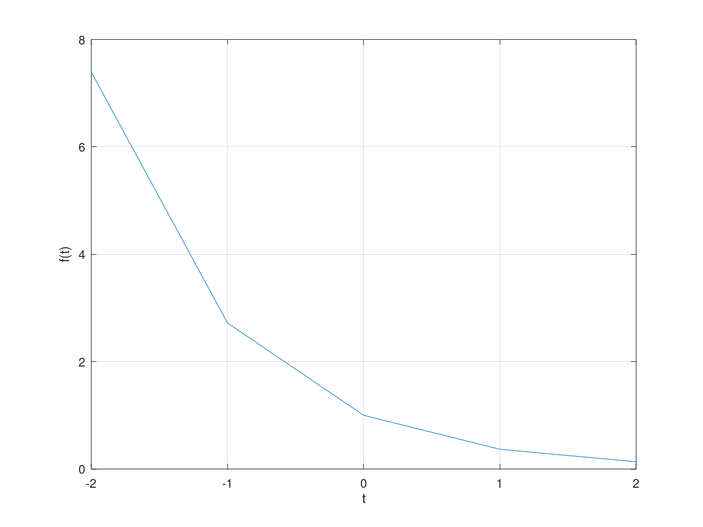
Figure 1.46 $f(t) = e^{-t}cos(2\pi t)$ for $t = (-2::2)$.
t1 = (-2:0.01:2); plot(t1, f(t1)); xlabel('t'); ylabel('f(t)'); grid;

Figure 1.47 $f(t) = e^{-t}cos(2\pi t)$ for $t = (-2:0.01:2)$.
1.11-2 Relational Operators and the Unit Step Function.
The unit step function $u(t)$ arises naturally in many practical situations. For example, a unit step can model the act of turning on a system. With the help of relational operators, anonymous functions can represent the unit step function. In MATLAB, a relational operator compares two items. If the comparison is true, a logical true (1) is returned. If the comparison is false, a logical false (0) is returned. Sometimes called indicator functions, relational operators indicates whether a condition is true. Six relational operators are available: <, >, <=, >=, ==, and ~=. The unit step function is readily defined using the >= relational operator.
u = @(t) 1.0.*(t>=0);
Any function with a jump discontinuity, such as the unit step, is difficult to plot. Consider plotting $u(t)$ by using $t = (-2:2)$.
t = (-2:2); plot(t, u(t)); xlabel ('t'); ylabel('u(t)');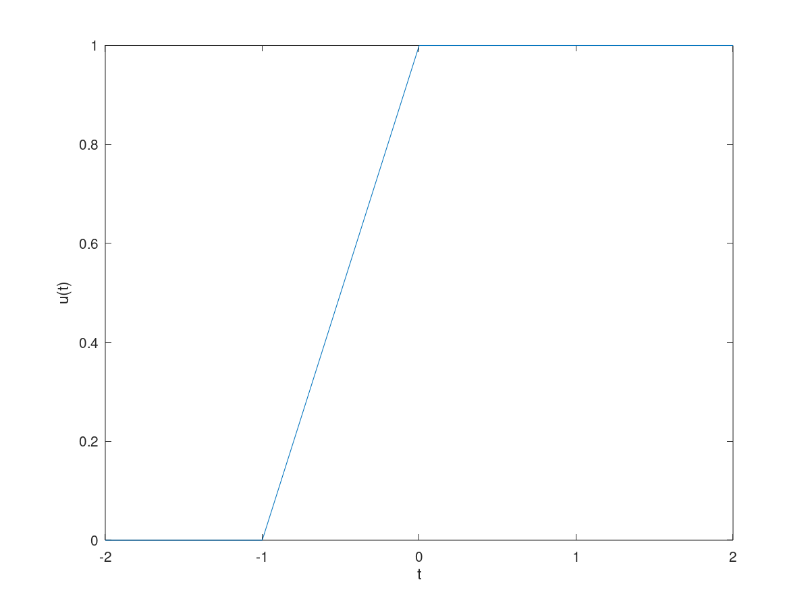
Figure 1.48 $u(t)$ for $t = (-2:2)$.
Two significant problems are apparent in the resulting plot, shown in Fig. 1.48. First, MATLAB automatically scales plot axes to tightly bound the data. In this case, this normally desirable feature obscures most of the plot. Second, MATLAB connects plot data with lines, making a true jump discontinuity difficult to achieve. The coarse resolution of vector t emphasizes the effect by showing an erroneous sloping line between t = −1 and t = 0. The first problem is corrected by vertically enlarging the bounding box with the axis command. The second problem is reduced, but not eliminated, by adding points to vector t.
t = (-2:0.01:2); plot(t, u(t)); xlabel('t'); ylabel('u(t)'); axis([-2 2 -0.1 1.1]);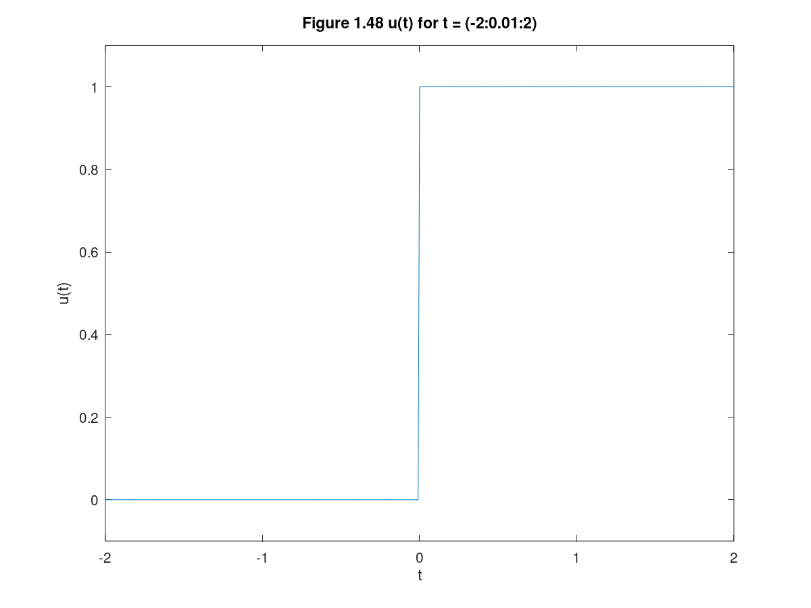
Figure 1.48 $u(t)$ for $t = (-2:0.01:2)$.
The four-element vector argument of axis specifies x axis minimum, x axis maximum, y axis minimum, and y axis maximum, respectively. The improved results are shown in Fig. 1.49. Relational operators can be combined using logical AND, logical OR, and logical negation: &, |, and ~, respectively. For example, (t>0) & (t<1) and ~((t<=0) $|$ (t>=1)) both test if 0 < t < 1. To demonstrate, consider defining and plotting the unit pulse p(t) = u(t) − u(t − 1), as shown in Fig. 1.50:
p =@(t) 1.0.*((t>=0)&(t<1)); t = (-1:0.01:2); plot(t, p(t)); xlabel('t'); ylabel('p(t) = u(t) - u(t-1)'); axis([-1 2 -0.1 1.1]);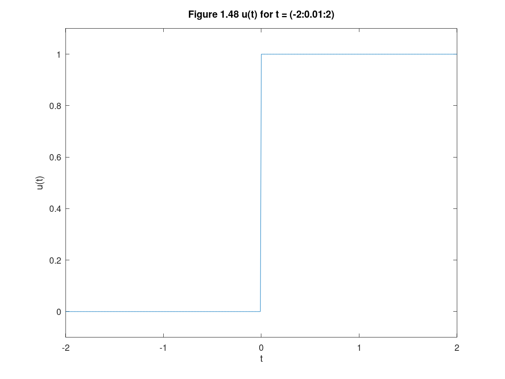
For the signal x(t) illustrated in Fig. P1.2-2, sketch
A) $x(t-4)$
B) $x(t/1.5)$
C) $x(-t)$
D) $x(2t-4)$
E) $x(2-t)$
u = @(t) 1.0.*(t>=0); u1= @(t) 1.0.*((t>=-4)&(t<0)); u2=@(t) 1.0.*((t>=0)&(t<=2)); f=@(t) (-t.*u1(t)) + (t.*u2(t)); t = (-20:0.01:20); plot(t,f(t)) axis([-5 5 -1 5]); title('Fig. P1.2-2'); xlabel('t'); ylabel('x(t)');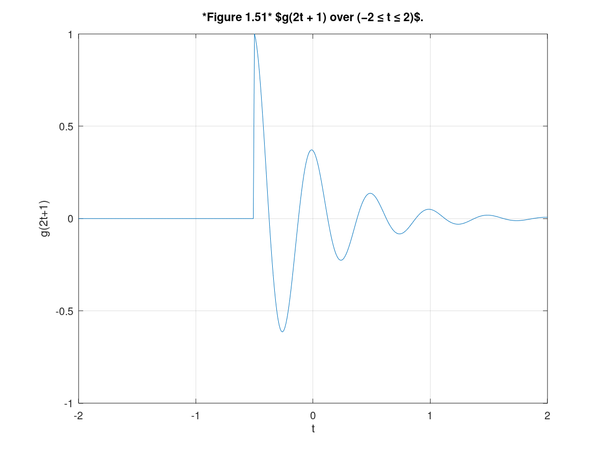
A) $x(t-4)$
x1=@(t) f(t-4); plot(t,x1(t)); axis([-1 9 -1 5]); title('Inciso a'); xlabel('t'); ylabel('x(t-4)');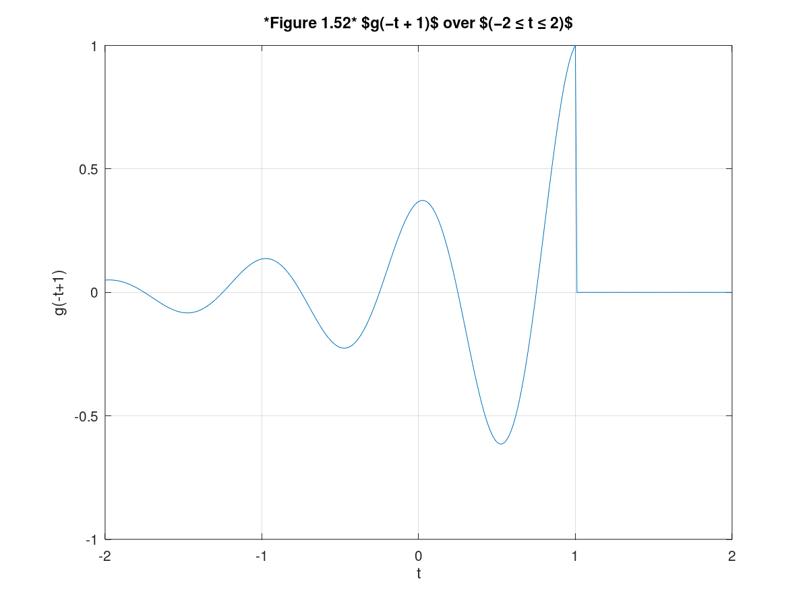
B) $x(t/1.5)$
x2=@(t) f(t/1.5); plot(t,x2(t)); axis([-8 5 -1 5]); title('Inciso b'); xlabel('t'); ylabel('x(t/1.5)');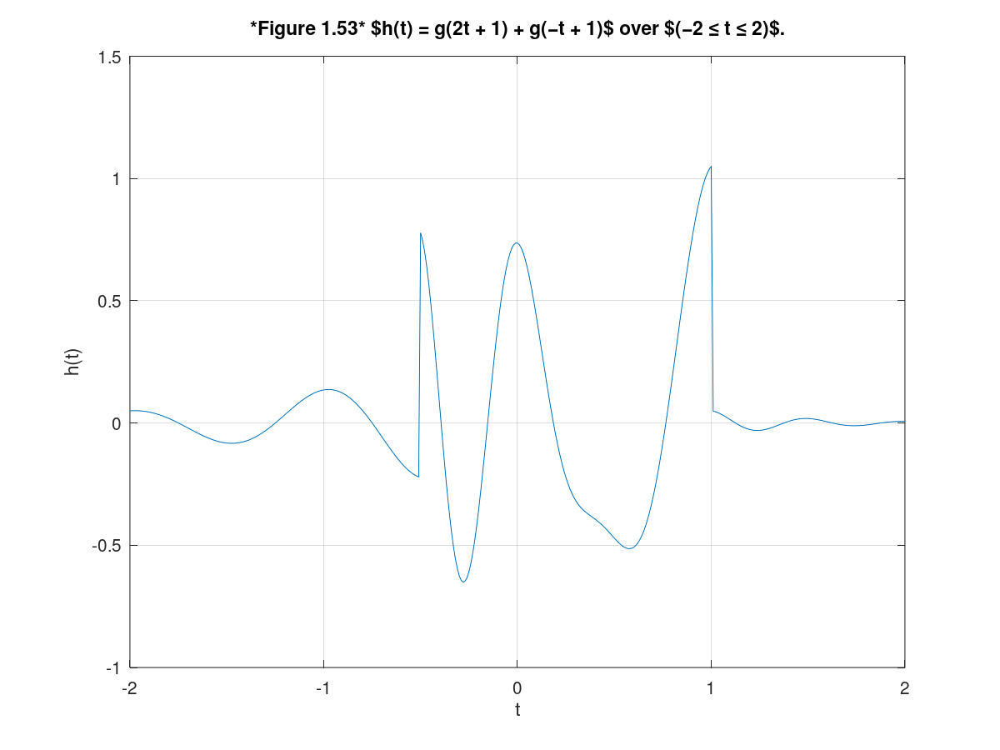
C) $x(-t)$
x3=@(t) f(-t); plot(t,x3(t)); axis([-5 5 -1 5]); title('Inciso c'); xlabel('t'); ylabel('x(-t)');

D) $x(2t-4)$
x4=@(t) f(2.*t - 4); plot(t,x4(t)); axis([-5 5 -1 5]); title('Inciso d'); xlabel('t'); ylabel('x(2t-4)');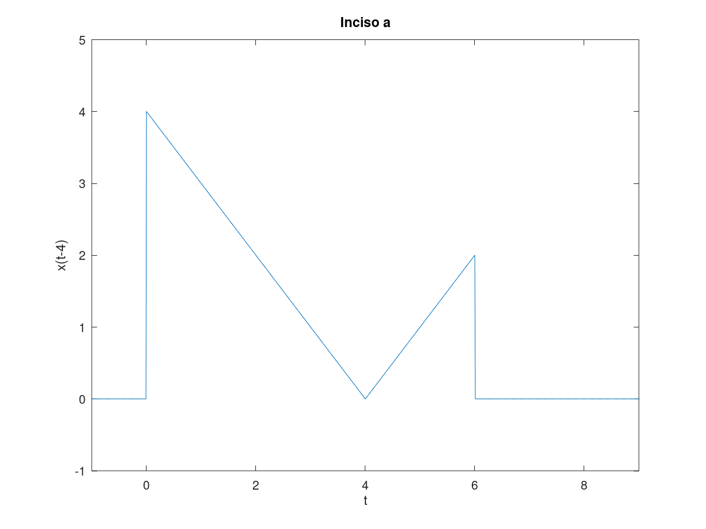
E) $x(2t-4)$
x5=@(t) f(2 - t); plot(t,x5(t)); axis([-1 8 -1 5]); title('Inciso e'); xlabel('t'); ylabel('x(2-t)'); t=(-3*pi:0.001:3*pi);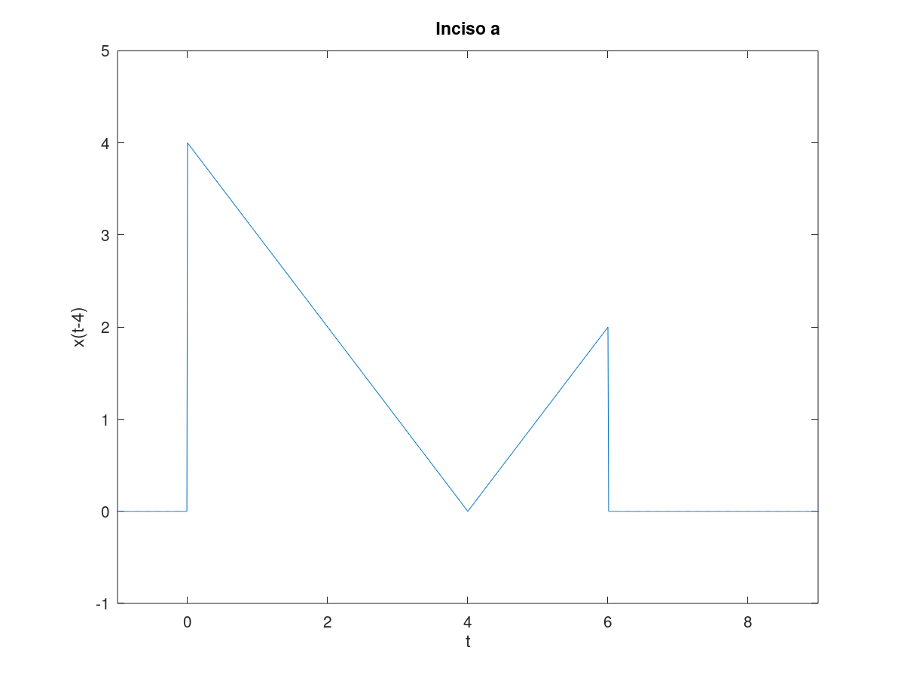
X(t)=2^t*cos(2pit); Ximpar(t)=1/2(x(t)-x(-t)); Ximpar(t)=(2^(-t-1))*cos(2pit)-(2^(t-1))*cos(-2pit);
for i=1:length(t) if t(i)<=-pi R(i)=-(2.^(t(i)-1)).*cos(-2*pi*t(i)); elseif t(i)>=pi R(i)=(2.^(-t(i)-1)).*cos(2*pi*t(i)); else R(i)=0; end end plot(t,R); ylabel('Ximpar(t)'); xlabel('t'); title('Ejercicio 1.11-1'); grid on;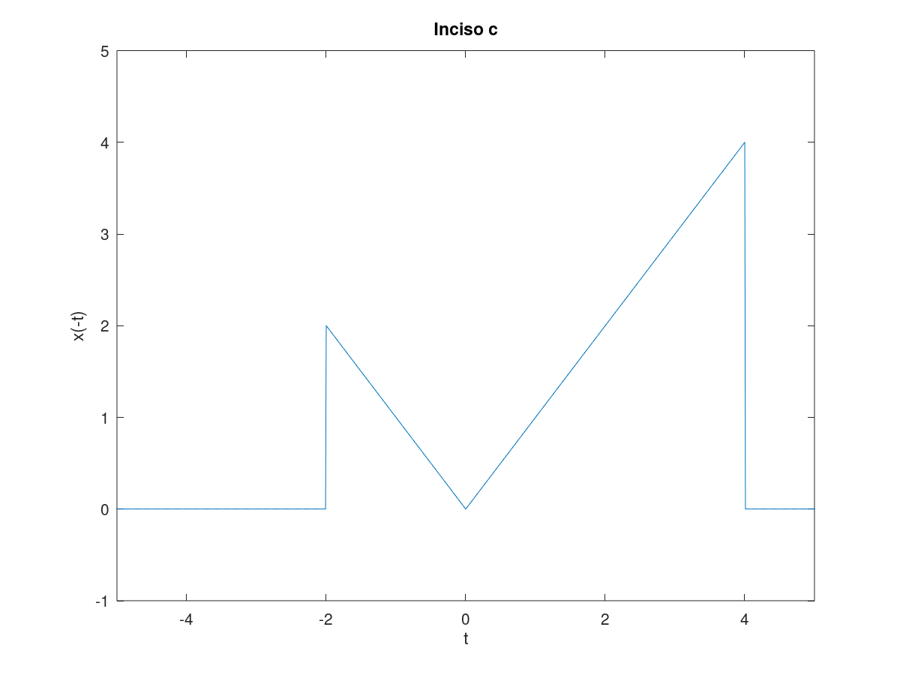
Construye la grafica de
$$x(t) = \sum_{k=1}^{10} cos(2\pi k t)$$
para cuatro rangos (figura 2x2). Los ejes deben mostrarse en el origen además de la edición de su preferencia. Procedimiento:
clf; subplot(2,2,1); y=0; t=linspace(-4*pi,-2*pi,1000); for k=1:10 x=cos(2*pi*k*t); y=y+x; end plot(t,y); grid on; ax = gca; xlabel('Dominio t'); ylabel('x(t)'); title('Gráfica rango -4pi<=t<=-2pi '); subplot(2,2,2); y=0; t=linspace(-2*pi,0,1000); for k=1:10 x=cos(2*pi*k*t); y=y+x; end plot(t,y); grid on; ax = gca; xlabel('Dominio t'); ylabel('x(t)'); title('Gráfica rango -2pi<=t<=0 '); subplot(2,2,3); y=0; t=linspace(0,2*pi,1000); for k=1:10 x=cos(2*pi*k*t); y=y+x; end plot(t,y); grid on; ax = gca; xlabel('Dominio t'); ylabel('x(t)'); title('Gráfica rango 0<=t<=2pi '); subplot(2,2,4); y=0; t=linspace(2*pi,4*pi,1000); for k=1:10 x=cos(2*pi*k*t); y=y+x; end plot(t,y); grid on; ax = gca; xlabel('Dominio t'); ylabel('x(t)'); title('Gráfica rango 2pi<=t<42pi ');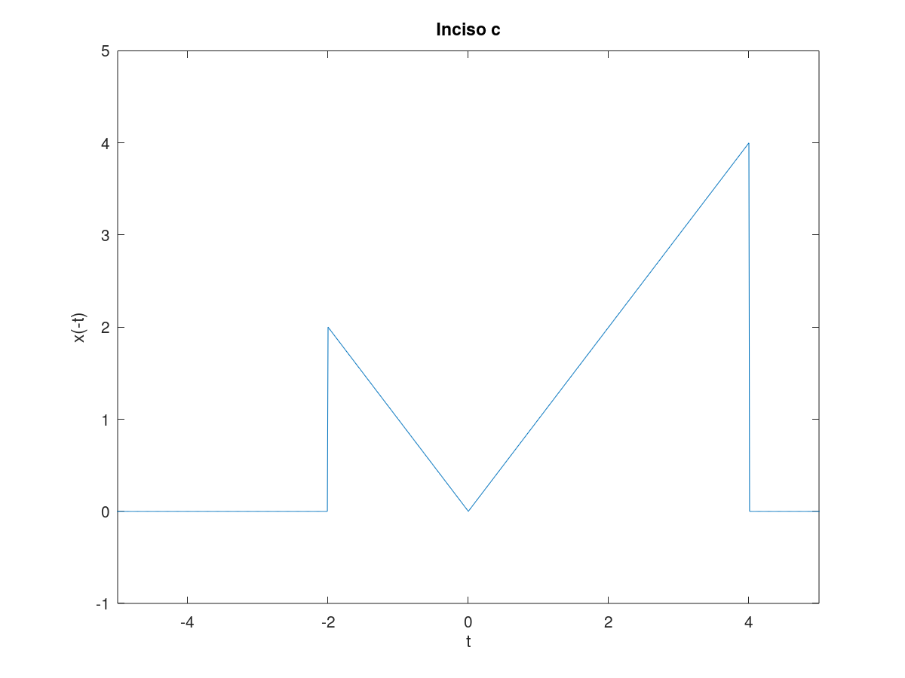